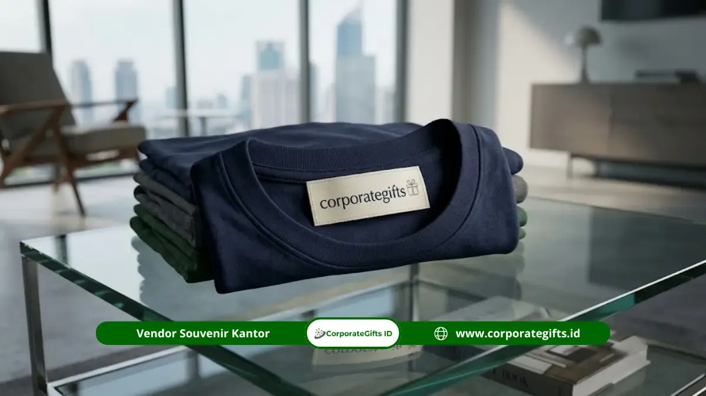

Corporate Gifts ID - Souvenir custom apparel perusahaan paling diminati 2026 meliputi polo shirt, jaket korporat, kaos event, rompi lapangan, kemeja formal bordir, seragam kerja premium, dan topi custom logo. Ketujuh jenis pakaian promosi ini terbukti paling efektif karena menempatkan logo perusahaan secara kasat mata, nyaman dipakai berulang kali dalam aktivitas sehari-hari, serta mudah disesuaikan dengan skala acara, profil penerima, dan alokasi anggaran pengadaan kantor.
Secara definitif, souvenir custom apparel perusahaan adalah produk pakaian dan aksesori berbahan tekstil pilihan yang dicetak atau dibordir dengan logo identitas korporat untuk dibagikan kepada karyawan, pelanggan setia, atau mitra bisnis. Busana ini berfungsi ganda: sebagai bentuk penghargaan atas kontribusi penerima, sekaligus sebagai media periklanan berjalan (walking billboard) organik yang membangun eksposur brand secara berkelanjutan.
Poin Kunci Custom Apparel Perusahaan:
- Eksposur Berulang: Pakaian berkualitas tinggi dipakai berulang kali oleh penerima, menghasilkan impresi visual tanpa batas biaya tayang per klik.
- Kesesuaian Bahan & Momen: Memilih bahan yang tepat (katun pique untuk polo, taslan untuk jaket, katun combed untuk kaos) menentukan kenyamanan dan masa pakai produk.
- Presisi Teknik Branding: Memadukan bordir komputer untuk aksen formal dan sablon DTF (Direct-to-Film) modern untuk visual multiwarna detail.
- Efisiensi Skala Pemesanan: Menyesuaikan kebutuhan acara dengan kuota Minimum Order Quantity (MOQ) demi menekan harga satuan secara signifikan.
Mengapa Souvenir Custom Apparel Begitu Diminati?
Pakaian korporat selalu menduduki peringkat teratas dalam survei pengadaan merchandise global karena memiliki daya guna praktis yang sangat tinggi. Berikut sejumlah data industri yang menguatkan tren ini:
- Proyeksi Pertumbuhan Pasar: Menurut laporan The Business Research Company (Corporate Gifting Global Market Report), pasar corporate gifting dunia diproyeksikan melonjak dari USD 886,56 miliar pada 2025 menjadi lebih dari USD 956,93 miliar pada 2026, dengan kategori apparel tekstil memegang pangsa pasar terbesar.
- Daya Ingat Merek yang Kuat: Riset konsumen dari Promotional Products Association International (PPAI) mencatat bahwa 9 dari 10 penerima mampu mengingat merek pada cinderamata promosi yang mereka kenakan, dan 83 persen penerima menyatakan lebih terbuka untuk bertransaksi dengan perusahaan yang memberi hadiah fungsional.
- Kebanggaan Budaya Korporat: Mengenakan busana seragam yang dirancang apik memicu rasa kepemilikan (sense of belonging) di kalangan tim internal serta menegaskan kredibilitas di hadapan para mitra industri.
Perbandingan Cepat 7 Souvenir Custom Apparel Perusahaan
Tabel komparasi berikut memetakan tujuh varian apparel terpopuler berdasarkan sasaran audiens, karakteristik bahan unggulan, serta teknik cetak logo yang paling direkomendasikan:
| Jenis Apparel | Rekomendasi Sasaran & Momen | Bahan Pilihan Unggulan | Teknik Branding Ideal |
|---|---|---|---|
| 1. Polo Shirt Custom | Karyawan kantor, peserta workshop B2B, kasual meeting mitra | Katun Pique, Lacoste CVC 24s | Bordir komputer dada, sablon DTF |
| 2. Jaket Korporat | Jajaran manajerial, dewan direksi, cenderamata tamu VVIP | Taslan milky waterproof, Fleece tebal, Softshell | Bordir dada, heat transfer reflektif lengan |
| 3. Kaos Event Massal | Employee gathering, fun run, perayaan HUT perusahaan | 100% Katun Combed 30s/24s reaktif | Sablon plastisol, cetak DTF full color |
| 4. Rompi Lapangan | Tim operasional teknis, konstruksi, pertambangan, logistik | Ripstop anti-sobek, Drill katun tebal, Jala reflektif K3 | Bordir logo dada & strip pita scotlight 3M |
| 5. Kemeja Formal | Front office, sales executive, seragam protokoler penandatanganan MoU | American Drill, Japan Drill, Katun Oxford | Bordir presisi dada kiri dan kerah |
| 6. Seragam Kerja Harian | Staf kantor pusat, karyawan pabrik, seragam shift terpadu | Nagoya Drill, Taipan Tropical, Katun Twill | Bordir komputer tahan cuci industri |
| 7. Topi Custom (Cap) | Pelengkap hampers onboarding, goodie bag outdoor, merchandise suporter | Rafel katun denim, Twill premium, Jaring trucker | Bordir 3D timbul depan, gesper besi custom |
1. Polo Shirt Custom Logo Perusahaan
Polo shirt menempati urutan teratas sebagai pakaian seragam paling serbaguna. Model berkerah dengan kancing rapi memberikan kesan profesional tanpa terkesan kaku, menjadikannya ideal untuk busana kerja harian bertema smart casual maupun seragam pameran dagang.
Material katun pique atau lacoste CVC premium memiliki pori-pori sarang lebah yang sejuk saat dikenakan di iklim tropis. Bordir komputer di dada kiri menghadirkan kontras elegan yang tahan puluhan siklus pencucian mesin tanpa pudar.
2. Jaket Korporat Eksekutif
Bagi tingkat manajerial hingga dewan direksi, jaket korporat adalah cinderamata dengan nilai prestise tertinggi. Model jaket bomber, jaket parasut windbreaker, atau jaket softshell tahan angin sering dipilih sebagai bingkisan penghargaan atas pencapaian tahunan tim eksekutif.
Kelebihan utama jaket terletak pada fleksibilitas penempatan dual-logo branding, yakni logo institusi di dada depan dipadukan dengan emblem kejuaraan divisi atau bendera nasional di lengan samping.
3. Kaos Event dan Gathering Karyawan
Kaos oblong (t-shirt) katun combed adalah pilihan paling ekonomis untuk kebutuhan berskala massal. Saat perusahaan menyelenggarakan acara family gathering, perayaan hari jadi ke-50, fun walk, atau seminar tahunan ratusan peserta, kaos menjadi seragam pemersatu atmosfer keceriaan.
Berkat teknik cetak modern sablon DTF (Direct-to-Film), perusahaan dapat mencetak visual grafis penuh warna, maskot korporat, hingga tipografi tematik tanpa batasan jumlah warna pada permukaan kain.

Proses finishing bordir komputer dan sablon DTF beresolusi tinggi pada jaket serta polo shirt korporat.
4. Rompi Lapangan Custom Branding
Bagi sektor industri manufaktur, pertambangan, energi, ekspedisi logistik, dan rekayasa konstruksi, rompi lapangan (utility vest) adalah perlengkapan krusial. Rompi ini dirancang dengan kompartemen banyak kantong untuk menyimpan peralatan kerja, alat tulis, dan handy-talky.
Penambahan strip scotlight reflektif 3M memastikan standar keselamatan kerja (K3) terpenuhi, sementara bordir nama instansi di punggung memberikan visibilitas maksimal bagi pengawas di lapangan terbuka.
5. Kemeja Formal Custom Bordir Logo
Kemeja lengan panjang atau pendek berbahan katun oxford dan Japan drill adalah pilihan wajib untuk agenda formal, seperti staf garda depan (front office), perwakilan negosiasi perbankan, dan cenderamata delegasi saat penandatanganan nota kesepahaman (MoU).
Kemeja formal dengan jahitan rantai rapi dan kode warna benang yang diselaraskan dengan panduan identitas merek (brand guideline) memancarkan citra korporasi yang solid dan berwibawa.
6. Seragam Kerja Custom Premium
Berbeda dari kaos acara yang dikenakan sesekali, seragam kerja kantor dikenakan 5 hari seminggu. Karena itu, ketahanan jahitan ganda (double stitch), ketahanan warna terhadap deterjen pencuci pakaian, dan sirkulasi kain menjadi faktor penentu kepuasan karyawan.
Bahan katun twill atau taipan tropical berkualitas tinggi memastikan pakaian tidak mudah kusut meski dipakai lembur di meja kerja maupun berpindah lokasi ke ruang rapat eksekutif.
7. Topi dan Cap Custom Logo Perusahaan
Topi baseball cap, bucket hat, maupun trucker cap menjadi aksesori pelengkap yang sangat digemari generasi muda. Topi ini mudah diselipkan ke dalam tas paket seminar kit atau gift box onboarding karyawan baru.
Biaya produksinya yang terjangkau dipadukan dengan teknik bordir timbul 3D pada panel depan menjadikan topi sebagai media promosi luar ruangan yang modis dan efektif.
Cara Memilih Souvenir Custom Apparel yang Tepat
Agar anggaran pengadaan pakaian perusahaan memberikan hasil optimal tanpa cacat produksi, ikuti enam langkah panduan berikut:
- Identifikasi Profil Pemakai & Momen Penggunaan: Bedakan kebutuhan antara pakaian santai gathering dan busana resmi kemitraan bisnis agar desain yang dibuat relevan dan benar-benar dipakai.
- Tentukan Bahan Berdasarkan Intensitas Gerak: Utamakan katun berserat alami (seperti katun combed atau lacoste CVC) untuk aktivitas ruang terbuka demi mencegah kegerahan pemakainya.
- Pilih Teknik Branding yang Tepat: Gunakan bordir komputer untuk polo, jaket, dan kemeja guna menciptakan kesan mewah. Gunakan sablon DTF untuk kaos dengan gambar gradasi warna kompleks.
- Sediakan Master Logo Beresolusi Tinggi: Siapkan file vektor format AI, CDR, atau PDF dengan panduan kode warna Pantone resmi agar warna kain dan benang akurat di setiap batch produksi.
- Wajibkan Persetujuan Mockup & Proofing Fisik: Mintalah sampel digital dan sampel fisik sebelum pabrik memulai pemotongan pola dan jahitan massal.
- Bekerja Sama dengan Vendor B2B Terverifikasi: Pastikan bermitra dengan penyedia katalog souvenir kantor yang memiliki legalitas resmi, garansi mutu, dan ketepatan waktu pengiriman teruji.
Kesimpulan: Maksimalkan Investasi Branding Pakaian
Pengadaan souvenir custom apparel perusahaan bukan sekadar pengeluaran rutin operasional, melainkan investasi aset merek jangka panjang yang terus menghasilkan nilai tambah. Saat seorang karyawan atau klien mengenakan pakaian bermerek perusahaan Anda dengan rasa bangga di ruang publik, reputasi dan citra profesional bisnis Anda secara otomatis terpromosikan dengan sendirinya.
Mulai dari polo shirt elegan, kemeja rapi, hingga jaket eksekutif berstandar tinggi, setiap helai pakaian mencerminkan komitmen terhadap kualitas. Rencanakan kebutuhan apparel perusahaan Anda bersama konsultan spesialis untuk hasil produksi yang memukau dan tepat sasaran.
Pertanyaan Seputar Custom Apparel (FAQ)

Ditulis oleh: Arinda Zakia
Senior Corporate Gifting SpecialistArinda Zakia adalah spesialis pengadaan merchandise dan corporate gift B2B di CorporateGifts.ID dengan pengalaman lebih dari 7 tahun dalam kurasi hampers eksklusif, seminar kit, dan suvenir perusahaan.
Lihat Profil Lengkap & Panduan Lainnya